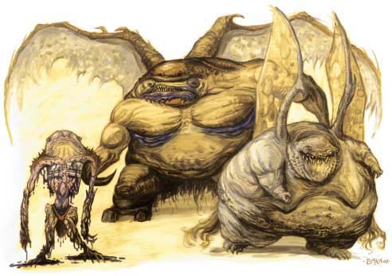

牢狱位面卡瑟利(Carceri)是众多生物的家园。此地的祈并者们永无休止地密谋逃离这炼狱般的境地，但严密的监视确保了他们的计划永远不会得逞。魔孽自封为卡瑟利住民的看守者――充当狱卒与典狱官，尽管他们自身也与所监视的祈并者一样，是这个位面的囚徒。
当然，卡瑟利上祈并者的数量如此之多，使得魔孽的任务几乎不可能完成，但这并不会对他们造成困扰。在无数个千年纪以前，由于早已被遗忘的原因（尽管克鲁巴魔孽(kelubar)与煞托魔孽(shator)一致认为这是法拉斯图魔孽(farastu)的过错），魔孽被从某些其他位面放逐到流放深渊之卡瑟利(Tarterian Depths of Carceri)以服刑役。在那里，他们自发地建立了一种秩序。虽然卡瑟利或其他位面可能存在魔孽的其他种类，但法拉斯图魔孽，克鲁巴魔孽，以及煞托魔孽最为常见。
魔孽的活动范围并不局限于卡瑟利。有时，人们会在其他位面遇到他们，他们以赏金猎人的身份追捕那些逃离流放深渊的家伙。然而，即便是在执行这样的任务时，他们也深知自己的最终归宿永远是卡瑟利。
魔孽不会主动挑衅卡瑟利的访客。然而，问题在于他们无法区分访客和常驻此地的居民。只要有生物出现在卡瑟利，魔孽便会认定其属于那里――并认为看守他留在那里是他们的职责。
召唤魔孽（Sp）：魔孽可以召唤同类，如同施展召唤怪物法术一般，但成功率有限。掷骰d%并将结果与特定魔孽描述中给出的数值范围进行比较。若失败，则不会有魔孽响应召唤。被召唤的生物会停留1小时，然后返回卡瑟利的巢穴。被召唤的魔孽自身在1小时内无法使用其自身的召唤魔孽能力。
行动自如（Su）：所有魔孽都受益于持续的行动自如，如同10级施法者施放的法术一般。
对毒素免疫（Ex）：所有魔孽都免疫毒素。
异界生物特性：魔孽拥有黑暗视觉（60英尺范围，煞托魔孽为120英尺范围）。他们无法被复活或复生。
中型异界生物（邪恶，跨位面）

| 生命骰： | 11d8+22（71 HP） |
| 先攻： | +5 |
| 速度： | 40 英尺 |
| 防御等级： | 25（+1 敏捷，+14 天生防御），接触 11，措手不及 24 |
| 基本攻击／擒抱： | +11/+23 |
| 攻击： | 爪击 +15 近战（1d4+4） |
| 全力攻击： | 2 爪击 +15 近战（1d4+4）和啮咬 +10 近战（1d6+2） |
| 面宽／触及： | 5 英尺/5 英尺 |
| 特殊攻击： | 粘性黏液、精通擒抱、狂暴、类法术能力、召唤魔孽 |
| 特殊能力： | 对强酸免疫、寒冷抗力 10、伤害减免 10/+1（译注：3r升级为10/善良）、异界生物特性、对毒素免疫、火焰抗力10，灵敏嗅觉，法术抗力 23 |
| 豁免： | 强韧 +9，反射 +8，意志 +8 |
| 属性： | 力量 19，敏捷 13，体质 14，智力 8，感知 12，魅力 16 |
| 技能： | 攀爬 +22，专注 +13，交涉 +6，躲藏 +12，威吓 +16，聆听 +14，潜行 +12，搜索 +10，察言观色 +12，侦察 +14，生存 +1（追踪 +3） |
| 专长： | 警觉，顺势斩，精通先攻，猛力攻击 |
| 地域： | 任何陆地和地下（卡瑟利） |
| 组织： | 单独，小队（2-4人），或成群（6-10人） |
| 挑战等级： | 11 |
| 宝物： | 标准 |
| 阵营： | 通常为中立邪恶 |
| 进化： | 12�C22 HD（大型）；23�C33 HD（超大型） |
法拉斯图魔孽是最常见的魔孽。他们被分配到最卑微的工作，听命于克鲁巴魔孽和煞托魔孽。由于被指控犯下了族群早已被遗忘的罪行，导致被放逐到卡瑟利，法拉斯图魔孽几乎不被其他魔孽容忍。
法拉斯图魔孽身高约7英尺，体重约220磅。他们四肢修长，头部硕大呈椭圆形。他们的身体不断渗出一种浓稠的黑色焦油状物质，缓缓地从他们瘦骨嶙峋的身躯上流淌下来。
法拉斯图魔孽在克鲁巴魔孽或煞托魔孽不在场时，傲慢而残忍。他们处于魔孽社会的最底层，喜欢欺凌弱小的生物。
法拉斯图魔孽会说魔孽语和深渊语。
法拉斯图魔孽最乐于见到被他们"照料"的祈并者试图逃跑，因为这能让他们将积压已久的怒火发泄在不幸的灵魂身上。他们通常会在战斗的第一回合就暴怒，然后试图缴械对手的武器，再用锋利的爪牙和满是利齿的大嘴猛扑过去。如果缴械的对手拥有强力武器，他们会毫不犹豫地将其据为己有。
法拉斯图魔孽可以通过九级召唤怪物术召唤。
粘性黏液（Ex）：法拉斯图魔孽分泌的浓稠焦油状黏液具有强大的粘性，能牢牢粘住任何接触到他的生物或物品。由于这种粘性黏液的存在，法拉斯图魔孽在擒抱检定和卸除武器检定上获得+8种族加值。他们经常擒抱敌人，然后用天生武器撕咬他们。
击中法拉斯图魔孽的武器会被粘住，除非使用者通过反射豁免检定（DC17）。撬开被粘住的武器需要进行力量检定（DC17）。
灯油、炽火胶或其他易燃油脂可以溶解粘液；如果被油浸湿，法拉斯图魔孽需要10分钟才能重新形成粘液层。法拉斯图魔孽可以随意溶解自身的粘液，粘液会在生物死亡后1分钟内分解。
精通擒抱（Ex）：如果法拉斯图魔孽用爪击命中，他会造成正常伤害，并且可以以自由动作尝试发起擒抱，而不会引发借机攻击（擒抱加值+23，狂暴状态下+25，包含粘性黏液的加值）。法拉斯图魔孽除了天生攻击外，没有其他特殊能力可以对被擒抱的敌人造成伤害，但他们的粘液使他们在擒抱中异常危险。
狂暴（Ex）：法拉斯图魔孽每天可以三次进入狂暴状态，如同野蛮人一般狂怒。它获得+4力量、+4体质，意志豁免检定获得+2士气加值，但防御等级-2减值。狂暴状态持续7轮，可以提前结束；狂暴结束后，法拉斯图魔孽不会感到疲乏。
以下变化在狂暴状态持续期间生效： 生命骰 11d8+44（93Hp）； 防御等级 23，接触9，措手不及22； 基本攻击/擒抱 +13/+25； 全回合攻击 2爪击+17近战和啮咬+12近战；爪击伤害1d4+6，啮咬伤害1d6+4； 豁免 强韧+11，意志+10； 力量23，体质18； 攀爬+24。
狂暴状态持续7轮，但法拉斯图魔孽可以随时提前结束。狂暴结束后，生物不会感到疲乏。
类法术能力：随意施展――侦测魔法、锐耳术/鹰眼术、恐惧术、隐形术、巧言术； 每日 3 次――云雾术、衰弱射线； 每日 2 次――解除魔法。
施法者等级 11；豁免DC 13 + 法术等级。
召唤魔孽（Sp）：法拉斯图魔孽每天可以尝试召唤1d4个法拉斯图魔孽，成功率为30%（d%结果为71-100）。
灵敏嗅觉（Ex）：法拉斯图魔孽可以感知接近的敌人，嗅出隐藏的敌人，并凭借嗅觉追踪目标。
技能：法拉斯图魔孽的粘性黏液使其在攀爬检定上获得+8种族加值。
生命骰：11d8+44 (93 hp)
中型异界生物（邪恶，跨位面）
| 生命骰： | 13d8+39（97 Hp） |
| 先攻： | +5 |
| 速度： | 30 英尺，飞行 60 英尺（一般） |
| 防御等级： | 27（+1 敏捷，+16 天生防御），接触 11，措手不及 26 |
| 基本攻击／擒抱： | +13/+18 |
| 攻击： | 爪击 +18 近战（1d4+5 外加强酸伤害） |
| 全力攻击： | 2 爪击 +18 近战（1d4+5 外加强酸伤害）和啮咬 +16 近战（1d6+2 外加强酸伤害） |
| 面宽／触及： | 5 英尺/5 英尺 |
| 特殊攻击： | 酸性粘液，偷袭 +4d6，类法术能力，恶臭，召唤魔孽 |
| 特殊能力： | 对强酸免疫，对寒冷免疫，伤害减免 15/+2（译注：3r升级为15/善良），异界生物特性，对毒素免疫，反射闪避，对火焰免疫，法术抗力25，直觉闪避 |
| 豁免： | 强韧+11、反射+9、意志+10 |
| 属性： | 力量20、敏捷13、体质17、智力14、感知15、魅力18 |
| 技能： | 唬骗+24、专注+19、交涉+28、易容+4（扮演他人+6）、收集信息+6、躲藏+9、威吓+22、知识（本地）+18、知识（位面）+18、聆听+18、潜行+9、察言观色+22、侦察+18、生存+2（其他位面+4） |
| 专长： | 闪避、精通先攻、灵活移动、多重攻击、跳跃攻击 |
| 地域： | 任何陆地和地下（卡瑟利） |
| 组织： | 独行、小队（2-4）或成群（6-10） |
| 挑战等级： | 13 |
| 宝物： | 标准 |
| 阵营： | 通常为中立邪恶 |
| 进化： | 13-22生命骰（大型）；23-39生命骰（超大型） |
克鲁巴魔孽是魔孽社会的官僚。他们充当煞托魔孽和法拉斯图魔孽之间的中间人，同时也是法拉斯图魔孽小队的监管者。覆盖在他们皮肤上的黏液与他们散发着恶臭的个性完美契合。
克鲁巴魔孽肥胖，部分原因是他们久坐不动的生活方式。他们体重接近500磅，身高约8英尺，长着蝙蝠般的翅膀，翼展近18英尺。他们的皮肤粗糙、结节状且呈皮革状，完全被一层淡绿色的黏液覆盖，使他们原本黝黑的皮肤呈现出一种怪诞的色调。
像所有魔孽一样，克鲁巴魔孽以他人的臣服为乐。虽然他们更喜欢言语交锋而非武力对抗，但必要时也会毫不犹豫地投入战斗。
克鲁巴魔孽精通魔孽语、深渊语和通用语。
如果遭到突袭，克鲁巴魔孽会尝试通过谈判来占据优势――表面上的外交斡旋会拖延对手，同时伺机寻找其弱点。战斗中，他们会先尝试召唤援军，然后施展类法术能力，最后才进入近战。
酸性黏液（Ex）：克鲁巴魔孽分泌的黏液会为其每次近战攻击附加1d6点酸性伤害。如果攻击造成重击，酸性爆发会额外造成1d10点酸性伤害。
偷袭（Ex）：当克鲁巴魔孽的目标失去敏捷加值或被克鲁巴魔孽夹击时，其成功的近战攻击会额外造成4d6点伤害。
类法术能力：随意施展――侦测魔法，锐耳术/鹰眼术，恐惧术，隐形术，马友夫酸箭术，蛛行术，巧言术； 每日3次――云雾术、衰弱射线； 每日2次――酸雾术、解除魔法。
施法者等级13级；豁免DC14+法术等级。
恶臭（Ex）：克鲁巴魔孽的黏液散发着污秽和腐烂的恶臭。30英尺内所有非魔孽生物必须通过强韧豁免检定（DC19），否则将陷入恶心状态。该状态持续到离开该区域后10轮。豁免成功的生物将免疫该克鲁巴魔孽的恶臭1天（但不会免疫其他克鲁巴魔孽的恶臭）。
召唤魔孽（Sp）：每天一次，克鲁巴魔孽可以尝试召唤1d2个克鲁巴魔孽，成功率为40%（d%结果为61-100）；或召唤1d4个法拉斯图魔孽，成功率为60%（d%结果为41-100）。
直觉闪避（Ex）：克鲁巴魔孽即使在措手不及或被隐形攻击者击中时，其敏捷加值仍然保留在防御等级上，并且只有11级或以上的游荡者才能对其进行夹击。它可以像7级游荡者一样夹击同样拥有直觉闪避能力的角色。
技能：克鲁巴魔孽在唬骗、交涉和察言观色检定上拥有+4种族加值。
大型异界生物（邪恶，跨位面）
| 生命骰： | 15d8+60（127 Hp） |
| 先攻： | +2 |
| 速度： | 30 英尺，飞行 70 英尺（不良） |
| 防御等级： | 28（-1 体型，+2 敏捷，+13 天生防御，+4 偏斜），接触 15，措手不及 26 |
| 基本攻击／擒抱： | +15/+25 |
| 攻击： | 超大型 +2 长勾刀 +22 近战伤害（2d6+11），或爪击 +20 近战伤害（1d6+6） |
| 全力攻击： | 超大型 +2 长勾刀 +22 近战伤害（2d6+11），或 2 爪击 +20 近战伤害（1d6+6）和啮咬 +18 近战伤害（2d6+3） |
| 面宽／触及： | 10 英尺/10 英尺（20） （使用长勾刀） |
| 特殊攻击： | 麻痹粘液、类法术能力、法术、召唤魔孽 |
| 特殊能力： | 对强酸免疫、对寒冷免疫、120英尺黑暗视觉、伤害减免20/+3（译注：3r升级为15/善良）、异界生物特性、对毒素免疫、对火焰免疫、免疫影响心灵、灵敏嗅觉、识破隐形、法术抗力30 |
| 豁免： | 强韧+13、反射+11、意志+12 |
| 属性： | 力量23、敏捷15、体质18、智力16、感知16、魅力21 |
| 技能： | 唬骗+20，专注+19，交涉+24，易容+20（扮演他人+22），收集信息+7，躲藏+17，威吓+25，知识（奥术）+18，知识（本地）+18，知识（位面）+18，聆听+20，潜行+17，搜索+17，察言观色+21，侦察+20，生存+3（追踪或在其他位面+5） |
| 专长： | 警觉，战斗反射，寓守于攻，精通绊摔，多重攻击，法术穿透 |
| 地域： | 任何陆地和地下（卡瑟利） |
| 组织： | 单独，小队（2-4），或团体（2-4外加6-10名法拉斯图魔孽和4-6名克鲁巴魔孽） |
| 挑战等级： | 16 |
| 宝物： | 双倍标准 |
| 阵营： | 通常为中立邪恶 |
| 进化： | 16-22生命骰（大型）；23-30生命骰（超大型）；31-45生命骰（巨型） |
煞托魔孽位于魔孽社会的顶端。如果说法拉斯图魔孽是卡瑟利的狱卒，那么煞托魔孽就是典狱长。煞托魔孽异常残忍，他们暗中希望那些被束缚于此位面的人能够逃脱，这样他们便可追捕逃亡者。
煞托魔孽肥胖丑陋，身高十英尺，体重近七百磅。他们背部长着巨大的蝙蝠状翅膀，苍白的黏液从他们蛙状的獠牙嘴角以及皮肤上滴落。
煞托魔孽全权决定是否追捕卡瑟利的逃犯，他们利用与生俱来的位面穿梭能力派遣魔孽外出执行赏金任务。他们不断密谋对抗其他卡瑟利派系，企图扩大魔孽的势力范围。
煞托魔孽之间鲜少信任，他们更倾向于通过自己的爪牙――法拉斯图魔孽和克鲁巴魔孽――来执行任务，不过在遇到共同的困难时，也会有一些煞托魔孽联合起来。
煞托魔孽使用魔孽语，以及深渊语、炼狱语和通用语。
煞托魔孽通常与一群法拉斯图魔孽和克鲁巴魔孽的豺狼为伴，这使得煞托魔孽在不愿参战时往往能够置身事外。煞托魔孽倾向于远程施放法术和类法术能力，并能喷吐麻痹黏液进行远程攻击。如果被迫近战，煞托魔孽会使用其+2的巨型长勾刀在10英尺外绊倒对手，然后凭借其精通绊摔专长进行一次额外攻击。由于拥有战斗反射专长，煞托魔孽可以在同一回合内对多个对手使用此战术。
麻痹黏液（Ex）：煞托魔孽的黏液如同神经毒素。被煞托魔孽的爪击或啮咬近战击中的生物必须通过强韧豁免检定（DC 21），否则将被麻痹3d6轮。煞托魔孽还可以喷吐一团黏液，进行远程接触攻击（射程30英尺），效果相同。
类法术能力：随意施展――侦测魔法，锐耳术/鹰眼术，恐惧术，隐形术，蛛行术，巧言术； 每日3次――死云术，云雾术，衰弱射线，臭云术； 每日2次――解除魔法； 每日1次――群体魅惑。
施法者等级15级；豁免DC15+法术等级。
法术：煞托魔孽可以像8级术士一样施展奥术。
每日法术位：6/8/7/6/4
0环（已知8个）：舞光术，眩晕术，幻音术，阅读魔法，法师之手，开关术，冷冻射线
1环（已知5个）：变巨术、法师护甲、魔法飞弹、隐雾术、克敌机先
2环（已知3个）：牛之力量、侦测思想、塔莎狂笑术
3环（已知2个）：闪现术、火球术 4环（已知1个）：困惑术 豁免DC = 15 + 法术等级。
召唤魔孽（Sp）：每天一次，煞托魔孽可以尝试召唤1d2个煞托魔孽，成功率为30%（d%结果为71-100），或者召唤1d4个克鲁巴魔孽或1d6个法拉斯图魔孽（由煞托魔孽选择），成功率为70%（d%结果为31-100）。
免疫影响心灵（Ex）：煞托魔孽免疫所有带有影响心灵描述符的法术和效果。
灵敏嗅觉（Ex）：煞托魔孽可以感知接近的敌人，嗅出隐藏的敌人，并凭借嗅觉追踪目标。
识破隐形（Su）：此能力如同识破隐形法术，但它始终生效，且作用范围延伸至煞托魔孽的视野极限。